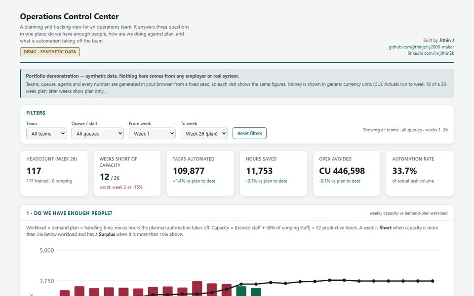

Case study · Planning and BI
Ops Control Center
Three questions an operations lead asks every Monday, answered on one screen.

The problem
Operations leads usually answer three questions from three different spreadsheets: do we have enough people, how are we doing against plan, and what is automation actually taking off the team? By the time the numbers are lined up, the week has started.
The approach
One view, three sections, each answering one question, all driven by the same filters for team, queue and weeks.
Key decisions
- Show the formulas on the page. Leads trust numbers they can check, so every calculation is written next to the chart it drives.
- Treat shortfalls and surpluses differently. A week is short when capacity is more than 5% below workload, but only in surplus above 10%, because being understaffed hurts more than being slightly over.
- Count new starters fairly. Staff who are still ramping up count at half capacity, rather than as full people or as zero.
- Pair every chart with a table. The weekly figures can always be read as a table too, for anyone who prefers numbers or uses a screen reader.
What it shows
Which weeks and queues are short of people, how tasks automated, hours saved and operating cost avoided are tracking against plan, and which agents' automation is delivering the most time back.
What I'd add next
A forecast for demand, so the capacity gap can be seen weeks ahead instead of only in the current plan.
A portfolio demonstration with synthetic data. Nothing here comes from any employer or real system.